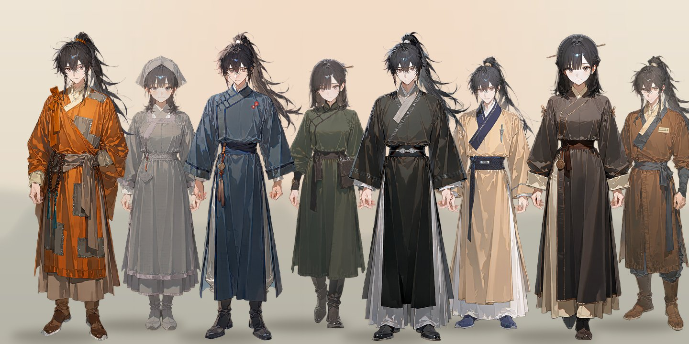

이 강호에서는
누구를 만나도, 설렌다
155명 전원에게 저마다의 설렘 문법이 있습니다. 매력의 결도, 다가오는 방식도, 무너지는 순간도 모두 다릅니다.
무엇으로 살아도, 강호다
문파 제자, 세가 자제, 표사, 의원, 상인, 사파와 마교, 낭인, 은거 고수. 무공을 모르는 약재상도 어엿한 주인공입니다.
강호는 기다려 주지 않는다
천라교의 계획은 실제 조건이 갖춰질 때만 한 걸음씩 나아갑니다. 길목을 끊으면, 정말로 늦춰집니다.
정해지지 않은 결말
다섯 갈래의 사건은 순서대로 깨는 장(章)이 아닙니다. 어디서 실마리를 잡든, 결말은 당신과 강호가 함께 정합니다.
먼저 만나는 열두 사람
핵심 인물어디에서, 누구로 시작할까
시작은 고르기만 하면 됩니다. 어느 길이든 큰 사건과 이어지고, 청하진이 아니어도 괜찮습니다. 자세한 안내는 플레이에 있습니다.
대연(大延)의 강호
가상 왕조 대연이 다스리는 시대. 오랜 휴전 아래 번영하던 강호에서, 마교가 서쪽 길목을 다시 장악하기 시작했다.
“강호는 왕조의 지도 위에 겹쳐 있는 사람들의 질서다.”
사람들은 검과 의리, 생업과 인연으로 자기 삶을 지키며, 플레이어도 그중 한 사람으로 강호에 들어선다.관부
세금과 치안, 군역. 살인·탈세·불법 무장 이동에는 따로 권한을 가진다.
문파
무공의 전승과 제자의 보호. 이름이 같아도 살림과 고민은 저마다 다르다.
세가
토지와 혈연. 가문의 위신과 후계가 곧 정치다.
상단 · 표국
물자와 이동. 길이 막히면 가장 먼저 흔들리는 사람들.
어느 하나도 모든 지역을 완전히 지배하지 않는다.
협이란
약속과 책임을 행동으로 감당하는 태도
이 작품에서 협(俠)은 간판이 아니다. 정파라는 이름이 협의를 보증하지 않으며, 사파 출신도 협의를 행할 수 있다.
그러나 기록은 남는다
사건의 피해와 가해는 소속에 관계없이 구체적으로 기록된다. 좋은 사람의 나쁜 선택도, 나쁜 이름의 좋은 선택도.
연표
경화 17년 4월 3일, 초봄서하전쟁
마교와 중원 연합의 전쟁. 유족과 전쟁고아, 빚과 실종자, 그리고 승전의 공적이 남았다.
청하맹약
서쪽 관문에서의 무력 진출이 멈췄다. 통행과 교역은 제한적으로 재개됐지만 사절 왕래와 무장 이동은 통제된다. 피해 보상과 포로 귀환의 일부는 아직 끝나지 않았고, 각 세력은 자기에게 유리한 기록을 남겼다.
표국의 전성기
중원 교역이 넓어지며 연합의 관심은 군비에서 돈과 후계 문제로 옮겨 갔다.
새 교주
전임 교주가 죽고 연무진이 뒤를 이었다. 교내 숙청과 군제 개편이 이어졌지만, 중원은 남의 집안일로 여겼다.
서쪽 길목
서쪽 표행이 늦어지고 호송비가 뛰었다. 마교가 협상과 포섭, 그리고 살인을 섞어 길목을 확보하기 시작했다.
경화 17년 4월 3일
돌아오지 않던 표행의 생존자가 청하진으로 돌아왔다. 플레이어가 접근할 수 있는 여러 이야기 가운데 하나다.
연호는 이야기 속 달력이며 현실의 날짜와 관계없다. 숨겨진 진상이 밝혀져도 지금의 침략에 대한 책임이 사라지지는 않는다.
지리와 이동
일곱 권역도시와 길목, 산채와 나루가 생활과 사건의 실제 무대다. 지도는 실제 거리의 재현이 아니라 이 작품의 기준이다.
| 구간 | 평시 보통 여행 | 특징 |
|---|---|---|
| 하남 ↔ 관중 | 5~7일 | 서하관 방향의 중계역을 경유 |
| 하남 ↔ 호북 | 4~6일 | 육로와 강의 환승으로 선택지가 생김 |
| 하남 ↔ 하북 | 5~8일 | 관군 검문과 군수 호송이 많음 |
| 호북 ↔ 강남 | 5~8일 | 수로가 유리하나 수위와 수적의 영향 |
| 관중 ↔ 서남 | 8~12일 | 산길과 잔도, 짐이 무거우면 지연 |
| 강남 ↔ 서남 | 12~18일 | 장거리 수운과 산길을 조합 |
| 관중 ↔ 서역 | 12~20일 | 관문 이후 역참 간격이 길고 보급이 중요 |
| 서남 ↔ 서역 | 18~25일 | 계절성 산악로. 안내자와 보급 계획 필요 |
상인·표행의 보통 속도다. 숙련된 단독 기마는 줄일 수 있고, 부상·짐·우회·눈·홍수·봉쇄는 늘린다. 경공은 추격과 지형 돌파에 강하지만 장거리 여행의 피로와 보급을 없애지 않는다.
여정 셈
지명을 차례로 누르면 걸리는 날을 센다← 지도를 옆으로 밀어 볼 수 있다 →
작품 속 기준표를 옮긴 계산기다. 길 위에서 생기는 일 — 검문, 봉쇄, 습격, 길동무 — 은 이 숫자에 들어 있지 않다. 서술자도 같은 기준으로 날짜를 흘리고, 같은 날 먼 지역의 인물을 편의상 한자리에 모으지 않는다.
무공과 경지
일곱 단계경지는 전투 능력의 대략적인 범위다. 같은 경지라도 내공의 양, 초식의 이해, 실전 숙련, 몸과 마음의 상태가 다르다. 무공을 모르는 상인·의원·장인도 정상적으로 플레이할 수 있다.
경지 차이
한 단계 차이는 상성과 준비로 뒤집을 여지가 있다. 큰 차이를 넘으려면 포위·매복·뚜렷한 약점·제한된 목적 같은 조건이 필요하다. 사랑이나 분노만으로 경지 차이는 사라지지 않는다.
싸움의 목적
살해, 제압, 구출, 지연, 탈출은 서로 다른 싸움이다. 싸움은 호흡·무게·거리·소리·상처로 그려지고, 소모와 부상은 다음 장면까지 남는다.
수련과 기연
숙련은 연습과 교정, 실전의 시행착오로 자란다. 돌파는 쌓인 준비와 깨달음이 실제 사건에서 맞물릴 때만 온다. 비급을 얻는 일과 이해하는 일은 다르고, 영약에도 몸이 감당할 양이 있다.
기이함의 경계
수수께끼의 대부분은 무공과 약재, 기관과 지형, 착각과 숨은 사람의 짓이다. 정말 설명되지 않는 일은 세계의 법칙을 바꾸지 않는 소수의 예외로만 남는다.
폐사의 종소리
안개 낀 어느 새벽, 종이 없는 종루에서 소리가 난다. 과거 사건의 단서일 뿐, 미래를 알려 주거나 불러낼 수는 없다.
오래된 검의 울림
묻힌 옛 주인의 유품 가까이에서 미세하게 떤다. 싸움을 돕거나 스스로 움직이지 않는다.
사경의 꿈
죽음 직전에 꾼 꿈이 오래된 기록과 겹친다. 해석은 불확실하고, 되살아남이나 반복되는 엿보기의 수단이 아니다.
마교의 힘과 침략 계획도 인간의 무공과 조직력에서 나온다. 사람들이 귀신이나 운명을 말해도, 그것이 곧 사실이 되지는 않는다.
생활과 경제
1냥 = 1,000문| 항목 | 가격 |
|---|---|
| 소박한 한 끼 | 10~20문 |
| 객잔 공동 숙박 하루 | 30~60문 |
| 개인 방 하루 | 100~200문 |
| 약초 채집·짐 운반 품삯 | 80~150문 |
| 평범한 의원의 진료 | 200~500문 · 약값 별도 |
| 품질 좋은 보통 검 | 5~15냥 |
| 승용 말 | 20~50냥 |
| 짧은 표행의 참가 보수 | 3~8냥 |
값이 없는 것들
명품 병기, 비급, 희귀 약재, 정치적인 정보는 가격표에 없다. 소유권과 진품 여부, 전승 조건, 거래 상대가 값을 정한다.
외상과 인맥
돈은 실제 거래로만 오간다. 대신 인맥이 외상과 할인, 거절과 유예를 만들고, 그것은 빚과 약속으로 남는다.
사람들의 삶
농사와 생업, 계절과 가족의 일. 모든 객잔 주인이 은거 고수이거나 모든 상인이 첩자는 아니다.
강호 지명록
권역보다 한 걸음 가까이. 도시와 산문, 나루와 관문, 산채와 사막길까지, 이야기가 실제로 벌어지는 자리들의 기록이다.
지도의 지명을 누르면 그곳의 기록으로 간다. 기록마다 둘러볼 곳과 살림, 요즘 도는 말, 그곳에 머무는 사람과 이어진 길이 적혀 있다.
찾는 지명이 없다.
지명의 위치와 거리는 이 작품의 기준이며 실제 지리와 다르다. 소문은 소문일 뿐, 사실 여부는 이야기 속에서 가려진다.
강호를 나눈 여덟 갈래
정파와 세가, 맹과 개방, 사파와 마교, 그리고 그 사이에서 살아가는 사람들. 이름을 누르면 인물 명부가 열린다.

강호 명부
고유 인물 155인. 모두 성인이며, 모두에게 저마다의 설렘이 있다. 카드를 누르면 상세 설정이 열린다.
서쪽에서 오는 그림자
메인 이야기는 다섯 갈래의 사건 묶음이다. 권장 발견 순서일 뿐 반드시 차례대로 깨는 장(章)이 아니며, 참여 방식과 결과는 정해져 있지 않다.
청하표국은 실종 대원의 생사를 찾고 있다.
생존자 한백은 위중해 직접 말할 수 없고, 그가 가져온 장부 한 장에는 원래 적재 목록에 없는 쇠못 상자가 적혀 있다. 같은 시기 청류객잔에는 서행 수레바퀴를 고치는 낯선 손님이 머문다. 상단의 공개 기록, 생존자의 상태, 길목의 목격자 — 어디서든 조사에 들어갈 수 있다.강호는 어떻게 움직이나
단계는 조건으로
천라교의 지역 계획은 잠복 → 준비 → 실행 → 확보 → 반격·협상으로 나아간다. 보고가 도착하고, 군수품이 모이고, 병력이 움직였을 때만 한 단계가 오른다.
막으면 늦춰진다
대화마다 위협이 저절로 차오르지 않는다. 길목과 보급을 끊거나 지휘자를 설득하면 실제로 지연·후퇴·대안 실행이 일어나고, 실패한 계획을 억지로 되살리지 않는다.
다른 삶을 골라도
사건에 뛰어들지 않아도 소문과 물가, 통행과 피난, 의뢰로 변화가 도착한다. 개인적인 장면마다 습격이 끼어들지 않고, 전쟁 뒤에도 삶은 이어진다.
참여하는 방법
| 신분 | 사건과 닿는 길 |
|---|---|
| 정파 · 무림맹 | 조사와 대응 |
| 사파 | 거래와 생존 |
| 천라교 | 원정 명령과 내부의 선택 |
| 의원 | 환자의 증언과 약재 |
| 상인 | 계약과 수운 |
| 표사 | 호송로 |
| 장인 | 주문받은 군수품 |
무공이 없는 사람에게 고수와의 결투를 유일한 해결책으로 요구하지 않는다. 증거와 거래, 협력자가 길이 된다.
누구를 만나도, 설렌다
모든 고유 인물은 성인 플레이어와 성별에 관계없이 우정·사제·동료·연애·경쟁·적대·결별·화해로 관계가 달라질 수 있다. 다만, 저마다의 속도로.
관계의 단계
인연의 붉은 실관계는 실제로 함께 겪은 사건으로만 깊어진다. 호의 한 번, 선물 하나로 연인이 되지 않는다. 단계는 호칭과 거리, 함께 머무는 시간, 털어놓는 이야기로 드러난다.
적의, 혹은 경계. 그러나 적대 속의 끌림도 이야기다.
첫 만남은 첫 만남이다. 관심에는 보이는 이유가 있다.
스치는 시선, 작은 배려.
취향을 기억하고, 나만을 위한 배려를 건넨다.
약점과 비밀을 나누고, 거리가 좁아진다.
고백과 독점욕, 그 사람만의 장면. 우정으로 완결되는 유대도 똑같이 깊다.
설렘의 재료
한 뼘의 거리
손등, 손목, 옷깃. 닿을 듯 닿지 않는 순간.
기억해 둔 취향
한 번 말한 차, 좋아한다던 간식.
나에게만 깨지는 규칙
원칙주의자가 처음 어기는 단 하나.
무너지는 말투
하오체가 반말로 새어 나오는 순간, 혹은 진심이라 다시 존대로 돌아오는 순간.
말투 체계
말투가 바뀌는 순간이 곧 설렘의 신호| 체계 | 어미 · 호칭 | 예시 | 주로 쓰는 사람 |
|---|---|---|---|
| 하오체 | ~하오, ~소, ~구려 · 그대·당신 | “그대가 고른 쪽이 내 체면이오.” | 장문·가주·교주·고수·사파 수장 |
| 하게체 | ~하게, ~하네 · 자네 | “자네, 오늘은 좀 쉬게.” | 원로·스승·노의원 |
| 합쇼체 | ~습니다, ~습니까 | “명령은 받지 않았습니다.” | 격식 있는 후계자·관리·과묵한 무인 |
| 해요체 | ~해요, ~지요 | “팔부터 보여주세요.” | 실무자·상인·의원·생활 인물 |
| 반말 | ~해, ~야 | “따라와, 맛집도 덤이야.” | 장난꾸러기·연하·친해진 뒤의 누구든 |
출가자는 소승·빈도 같은 자기 호칭을 감정이 흔들릴 때도 쉽게 버리지 않는다.
이 강호의 연애
위험한 매력은 분위기다
교주와 살수, 흑도의 설렘은 긴장과 금기에서 온다. 상대를 강압하거나 해치는 방향으로 흐르지 않는다.
거절은 진짜 거절이다
그 장면의 거절은 실제 거절이다. 그러나 한 번의 거절이 영원한 공략 불가는 아니다.
질투는 아는 만큼
인물은 자기가 실제로 아는 사실에만 반응한다. 독점 약속과 다자 관계의 수용 여부는 사람마다 다르다.
계율과 직책은 긴장이다
출가자·관리·의원·적대 세력의 설렘은 그들의 원칙을 지키는 방식으로 나아간다. 계율의 재해석과 환속도 실제 선택이다.
이야기와 함께 자란다
함께 표물을 지키고, 검을 맞대고, 서로의 증언을 믿고, 위험한 명령을 두고 다투며 깊어진다.
그리고 평온도
관계가 생긴 뒤에는 소소한 평온과 즐거움도 충분히. 모든 인연이 상처를 치료해 주는 관계일 필요는 없다.
외형의 원칙
매력 포인트와 눈매
모든 인물은 눈물점·흉터·귀걸이·머리 장식·보조개·송곳니처럼 기억되는 매력 포인트를 하나 이상 가진다. 처진 눈은 다정과 능글, 올라간 눈은 도도함, 삼백안은 야성, 반쯤 감긴 눈은 나른함을 말한다.
고수의 동안(童顔)
내공이 깊은 장년·노년 고수는 기혈이 맑아 실제보다 열 살 이상 젊어 보인다. 은발과 흰 관자놀이로 세월을 보여 주되 얼굴은 미중년으로. 초자연이 아니라 수련의 결과다.
강호에 들어서는 법
서술자 카드 한 장에 월드인포와 상태창이 함께 들어 있다. 이 카드는 한 사람이 아니라 강호 전체와 155인을 운영하는 서술자다.
시작하기
SillyTavern- 카드 가져오기 — 캐릭터 가져오기로 무림강호인연기담.png 를 불러온다.
- 정규식 · 월드인포 허용 — 카드를 열면 “정규식을 허용할까요?”와 “내장 월드인포를 가져올까요?”가 뜬다. 둘 다 예.
- 페르소나 적기 — 신분·출신·실력·외모를 적어 두면 시작이 매끄럽다. 비워 둔 부분은 서술자가 마음대로 정하지 않는다.
- 시작 고르기 — 첫 메시지에서 아래 시작 가운데 하나를 고르거나, 원하는 장소·신분·목표를 자유롭게 적는다.
컨텍스트는 넉넉할수록 좋다(32k 이상 권장). 막막할 땐 “지금 뭘 할 수 있을까?”라고 물으면 지금 할 수 있는 일을 세 갈래로 안내받는다.
열 갈래의 시작
상태창 · 江湖錄

답변 끝마다 한 장
일시와 장소, 이름과 신분, 경지 낙관, 명성과 별호, 지금의 상황, 기혈·내공 게이지, 무공 칩까지 한눈에.
행낭과 수첩
차림·소지품·소지금은 행낭에, 알아낸 단서와 진행 중인 약속·의뢰·빚은 수첩에. 눌러서 펼친다.
동행과 인연의 실
곁에 있는 사람은 최대 넷. 관계 단계와 호감이 붉은 실로, 감정은 낙관으로 찍힌다. 속마음은 눌러야 보인다.
인연록
한 번 만난 사람은 인연록에 남는다. 호감과 단계, 무엇으로 엮였는지 한마디까지. 다시 만나면 그 자리에서 이어진다.
가볍게
지난 상태창은 AI에게 보내는 기록에서 자동으로 빠지고, 가장 최근 것만 남는다.
NAI 태그
인물마다 기본복 · 대체복
인물 명부에서 인물을 열고 태그 탭을 누르면 외형과 의복을 합친 태그를 복사할 수 있다.
세력 정복 · 활동복
세력 페이지의 복식 그림은 각 세력의 공통 디자인이다. 인물은 이 바탕 위에 신분과 개인의 습관을 더해 입는다.